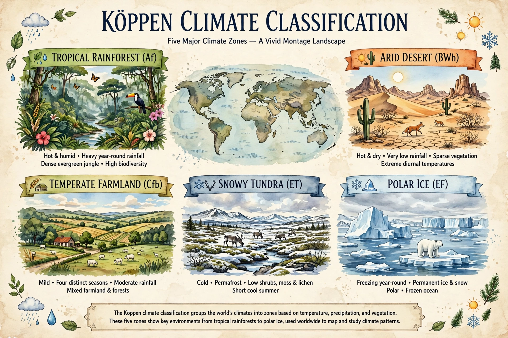

The Köppen climate classification is the most widely used system for classifying the world's climates, developed by German-Russian climatologist Wladimir Köppen and later modified with Rudolf Geiger.
Climates are divided into five main groups — A (tropical), B (arid), C (temperate), D (continental) and E (polar) — defined by monthly temperature and precipitation thresholds related to vegetation boundaries. Second and third letters denote precipitation seasonality and temperature subtype: for example Af (tropical rainforest), BWh (hot desert), Cfb (oceanic), Dfc (subarctic) and ET (tundra).
The system underpins climate maps in atlases, ecology and climate change studies projecting how zones will shift with warming. Variants include the Köppen–Geiger and Trewartha classifications. See also Climate.